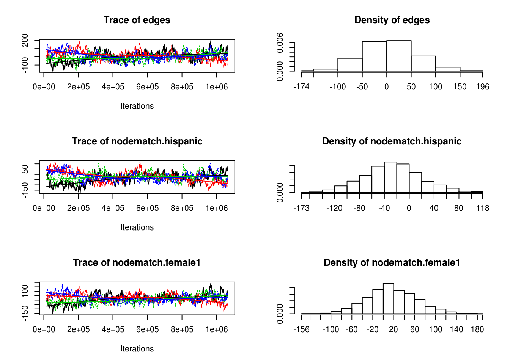

5.1 The ergm package
The ergm R package (Handcock et al. 2017)
From the previous section:5
library(igraph)
library(magrittr)
library(dplyr)
load("03.rda")In this section we will use the ergm package (from the statnet) suit, and the intergraph package. The latter provides functions to go back and forth between igraph and network objects from the igraph and network packages respectively6
library(ergm)
library(intergraph)Using the asNetwork function, we can coerce the igraph object into a network object so we can use it with the ergm function:
# Creating the new network
network_111 <- intergraph::asNetwork(ig_year1_111)
# Running a simple ergm (only fitting edge count)
ergm(network_111 ~ edges)## [1] "Warning: This network contains loops"
## [1] "Warning: This network contains loops"
## [1] "Warning: This network contains loops"## Evaluating log-likelihood at the estimate.##
## MLE Coefficients:
## edges
## -4.732So what happened here! We got a warning. It turns out that our network has loops (didn’t thought about it before!). Let’s take a look on that with the which_loop function
E(ig_year1_111)[which_loop(ig_year1_111)]## + 1/2638 edge from ec13556 (vertex names):
## [1] 1110111->1110111We can get rid of these using the igraph::-.igraph. Moreover, just to illustrate how it can be done, let’s get rid of the isolates using the same operator
# Creating the new network
network_111 <- ig_year1_111
# Removing loops
network_111 <- network_111 - E(network_111)[which(which_loop(network_111))]
# Removing isolates
network_111 <- network_111 - which(degree(network_111, mode = "all") == 0)
# Converting the network
network_111 <- intergraph::asNetwork(network_111)Let’s rerun the model, now with a couple of extra terms
Estimate the simplest model, adding one variable at a time
After each estimation, run the
mcmc.diagnosticsfunction to see how good/bad behaved are the chainsRun the
goffunction to
control.ergms: Maximum number of iteration, seed for Pseudo-RNG, how many cores
ergm.constraints: Where to sample the network from. Gives stability as
gof
# Running a simple ergm (only fitting edge count)
ans0 <- ergm(
network_111 ~
edges +
nodematch("hispanic") +
nodematch("female1") +
nodematch("eversmk1") +
mutual
,
constraints = ~bd(maxout = 19, maxin = 22),
control = control.ergm(
seed = 1,
MCMLE.maxit = 10,
parallel = 4,
CD.maxit = 10
)
)## Starting contrastive divergence estimation via CD-MCMLE:## Iteration 1 of at most 10:## Convergence test P-value:0e+00## The log-likelihood improved by1.735## Iteration 2 of at most 10:## Convergence test P-value:0e+00## The log-likelihood improved by1.867## Iteration 3 of at most 10:## Convergence test P-value:0e+00## The log-likelihood improved by1.584## Iteration 4 of at most 10:## Convergence test P-value:5.4e-195## The log-likelihood improved by0.7262## Iteration 5 of at most 10:## Convergence test P-value:6.4e-56## The log-likelihood improved by0.1468## Iteration 6 of at most 10:## Convergence test P-value:4.4e-11## The log-likelihood improved by0.02877## Iteration 7 of at most 10:## Convergence test P-value:8.9e-04## The log-likelihood improved by0.01025## Iteration 8 of at most 10:## Convergence test P-value:1.1e-01## The log-likelihood improved by0.004459## Iteration 9 of at most 10:## Convergence test P-value:8.1e-01## Convergence detected. Stopping.## The log-likelihood improved by0.001105## Starting maximum likelihood estimation via MCMLE:## Iteration 1 of at most 10:## Optimizing with step length 0.927769132341318.## The log-likelihood improved by 2.215.## Iteration 2 of at most 10:## Optimizing with step length 0.298934775640332.## The log-likelihood improved by 2.493.## Iteration 3 of at most 10:## Optimizing with step length 0.314693064006812.## The log-likelihood improved by 3.096.## Iteration 4 of at most 10:## Optimizing with step length 0.694716889523959.## The log-likelihood improved by 1.537.## Iteration 5 of at most 10:## Optimizing with step length 1.## The log-likelihood improved by 1.141.## Step length converged once. Increasing MCMC sample size.## Iteration 6 of at most 10:## Optimizing with step length 1.## The log-likelihood improved by 0.6937.## Step length converged twice. Stopping.## Note: The constraint on the sample space is not dyad-independent. Null model likelihood is only implemented for dyad-independent constraints at this time. Number of observations is similarly ill-defined.## Evaluating log-likelihood at the estimate. Using 20 bridges: 1 2 3 4 5 6 7 8 9 10 11 12 13 14 15 16 17 18 19 20 .
## This model was fit using MCMC. To examine model diagnostics and check for degeneracy, use the mcmc.diagnostics() function.# What did we get
summary(ans0)## Note: The constraint on the sample space is not dyad-independent. Null model likelihood is only implemented for dyad-independent constraints at this time. Number of observations is similarly ill-defined.##
## ==========================
## Summary of model fit
## ==========================
##
## Formula: network_111 ~ edges + nodematch("hispanic") + nodematch("female1") +
## nodematch("eversmk1") + mutual
##
## Iterations: 6 out of 10
##
## Monte Carlo MLE Results:
## Estimate Std. Error MCMC % p-value
## edges -5.62242 0.05005 0 <1e-04 ***
## nodematch.hispanic 0.35938 0.03453 0 <1e-04 ***
## nodematch.female1 0.82255 0.04359 0 <1e-04 ***
## nodematch.eversmk1 0.33361 0.03844 0 <1e-04 ***
## mutual 4.09236 0.07035 1 <1e-04 ***
## ---
## Signif. codes: 0 '***' 0.001 '**' 0.01 '*' 0.05 '.' 0.1 ' ' 1
##
## Null Deviance: 0 on 174306 degrees of freedom
## Residual Deviance: -37491 on 174301 degrees of freedom
##
## Note that the null model likelihood and deviance are defined to be 0.
##
## AIC: -37481 BIC: -37430 (Smaller is better.)mcmc.diagnostics(ans0)## Sample statistics summary:
##
## Iterations = 16384:1063936
## Thinning interval = 1024
## Number of chains = 4
## Sample size per chain = 1024
##
## 1. Empirical mean and standard deviation for each variable,
## plus standard error of the mean:
##
## Mean SD Naive SE Time-series SE
## edges 5.2175 54.79 0.8562 4.504
## nodematch.hispanic -26.8933 46.16 0.7212 4.560
## nodematch.female1 16.6682 47.28 0.7388 4.372
## nodematch.eversmk1 6.1863 48.54 0.7584 5.370
## mutual 0.8477 21.24 0.3319 4.430
##
## 2. Quantiles for each variable:
##
## 2.5% 25% 50% 75% 97.5%
## edges -98 -32.00 4 41 116.00
## nodematch.hispanic -118 -56.00 -27 2 66.62
## nodematch.female1 -75 -14.25 15 48 113.00
## nodematch.eversmk1 -84 -27.00 4 37 109.00
## mutual -46 -12.00 -1 14 43.00
##
##
## Sample statistics cross-correlations:
## edges nodematch.hispanic nodematch.female1
## edges 1.0000000 0.7703930 0.8702355
## nodematch.hispanic 0.7703930 1.0000000 0.6691023
## nodematch.female1 0.8702355 0.6691023 1.0000000
## nodematch.eversmk1 0.8321525 0.6704200 0.7319416
## mutual 0.7012887 0.6083908 0.6661004
## nodematch.eversmk1 mutual
## edges 0.8321525 0.7012887
## nodematch.hispanic 0.6704200 0.6083908
## nodematch.female1 0.7319416 0.6661004
## nodematch.eversmk1 1.0000000 0.6791293
## mutual 0.6791293 1.0000000
##
## Sample statistics auto-correlation:
## Chain 1
## edges nodematch.hispanic nodematch.female1 nodematch.eversmk1
## Lag 0 1.0000000 1.0000000 1.0000000 1.0000000
## Lag 1024 0.9194094 0.9264455 0.9322242 0.9148191
## Lag 2048 0.8526321 0.8583709 0.8679994 0.8473601
## Lag 3072 0.7980086 0.8047307 0.8148158 0.7874674
## Lag 4096 0.7556384 0.7658891 0.7753939 0.7373127
## Lag 5120 0.7202209 0.7380723 0.7438670 0.6973020
## mutual
## Lag 0 1.0000000
## Lag 1024 0.9922688
## Lag 2048 0.9850092
## Lag 3072 0.9782542
## Lag 4096 0.9718149
## Lag 5120 0.9651833
## Chain 2
## edges nodematch.hispanic nodematch.female1 nodematch.eversmk1
## Lag 0 1.0000000 1.0000000 1.0000000 1.0000000
## Lag 1024 0.8937698 0.9320595 0.9003587 0.9090676
## Lag 2048 0.8058768 0.8732285 0.8200779 0.8353461
## Lag 3072 0.7329964 0.8234520 0.7531759 0.7755789
## Lag 4096 0.6738326 0.7817764 0.6904470 0.7207250
## Lag 5120 0.6359449 0.7538172 0.6430627 0.6829884
## mutual
## Lag 0 1.0000000
## Lag 1024 0.9883401
## Lag 2048 0.9764278
## Lag 3072 0.9637258
## Lag 4096 0.9517826
## Lag 5120 0.9404211
## Chain 3
## edges nodematch.hispanic nodematch.female1 nodematch.eversmk1
## Lag 0 1.0000000 1.0000000 1.0000000 1.0000000
## Lag 1024 0.8691963 0.8697551 0.8905401 0.8832045
## Lag 2048 0.7670783 0.7709648 0.8086326 0.7950309
## Lag 3072 0.6765077 0.6916824 0.7397413 0.7181674
## Lag 4096 0.5939888 0.6283922 0.6724809 0.6500649
## Lag 5120 0.5341970 0.5833965 0.6153834 0.5984216
## mutual
## Lag 0 1.0000000
## Lag 1024 0.9742239
## Lag 2048 0.9505850
## Lag 3072 0.9285324
## Lag 4096 0.9067956
## Lag 5120 0.8879835
## Chain 4
## edges nodematch.hispanic nodematch.female1 nodematch.eversmk1
## Lag 0 1.0000000 1.0000000 1.0000000 1.0000000
## Lag 1024 0.9083130 0.9144195 0.9124920 0.9072684
## Lag 2048 0.8301639 0.8566684 0.8337887 0.8298152
## Lag 3072 0.7625395 0.8035036 0.7719743 0.7678617
## Lag 4096 0.7030654 0.7581905 0.7172222 0.7157227
## Lag 5120 0.6528153 0.7165866 0.6732486 0.6688953
## mutual
## Lag 0 1.0000000
## Lag 1024 0.9879414
## Lag 2048 0.9759230
## Lag 3072 0.9644667
## Lag 4096 0.9533075
## Lag 5120 0.9412684
##
## Sample statistics burn-in diagnostic (Geweke):
## Chain 4
##
## Fraction in 1st window = 0.1
## Fraction in 2nd window = 0.5
##
## edges nodematch.hispanic nodematch.female1
## -4.505 -5.054 -6.423
## nodematch.eversmk1 mutual
## -7.250 -7.454
##
## Individual P-values (lower = worse):
## edges nodematch.hispanic nodematch.female1
## 6.648201e-06 4.327581e-07 1.340410e-10
## nodematch.eversmk1 mutual
## 4.152969e-13 9.082950e-14
## Joint P-value (lower = worse): 0.0004497061 .
## Chain 4
##
## Fraction in 1st window = 0.1
## Fraction in 2nd window = 0.5
##
## edges nodematch.hispanic nodematch.female1
## 3.065 5.834 2.057
## nodematch.eversmk1 mutual
## 4.452 1.770
##
## Individual P-values (lower = worse):
## edges nodematch.hispanic nodematch.female1
## 2.179724e-03 5.396178e-09 3.967389e-02
## nodematch.eversmk1 mutual
## 8.487764e-06 7.678079e-02
## Joint P-value (lower = worse): 0.03093665 .
## Chain 4
##
## Fraction in 1st window = 0.1
## Fraction in 2nd window = 0.5
##
## edges nodematch.hispanic nodematch.female1
## -3.482 -3.076 -6.079
## nodematch.eversmk1 mutual
## -3.388 -3.348
##
## Individual P-values (lower = worse):
## edges nodematch.hispanic nodematch.female1
## 4.983811e-04 2.100660e-03 1.212941e-09
## nodematch.eversmk1 mutual
## 7.037519e-04 8.147796e-04
## Joint P-value (lower = worse): 0.1164457 .
## Chain 4
##
## Fraction in 1st window = 0.1
## Fraction in 2nd window = 0.5
##
## edges nodematch.hispanic nodematch.female1
## 4.702 7.223 5.269
## nodematch.eversmk1 mutual
## 6.900 4.079
##
## Individual P-values (lower = worse):
## edges nodematch.hispanic nodematch.female1
## 2.574907e-06 5.086754e-13 1.372144e-07
## nodematch.eversmk1 mutual
## 5.194108e-12 4.522375e-05
## Joint P-value (lower = worse): 0.002006982 .## Warning in formals(fun): argument is not a function
##
## MCMC diagnostics shown here are from the last round of simulation, prior to computation of final parameter estimates. Because the final estimates are refinements of those used for this simulation run, these diagnostics may understate model performance. To directly assess the performance of the final model on in-model statistics, please use the GOF command: gof(ergmFitObject, GOF=~model).From the MCMC diagnostics we see that the chain still hasn’t converged propertly. How do we know this? Well, as a rule of thum we should expect that at the end of the distribution all chains go at around the same value.
# Computing and printing GOF estatistics
ans_gof <- gof(ans0)
ans_gof##
## Goodness-of-fit for in-degree
##
## obs min mean max MC p-value
## 0 13 0 2.19 6 0.00
## 1 34 3 8.96 21 0.00
## 2 37 13 22.17 34 0.00
## 3 48 29 41.08 58 0.28
## 4 37 37 56.89 75 0.02
## 5 47 45 63.96 81 0.02
## 6 42 41 63.21 83 0.02
## 7 39 39 53.20 69 0.04
## 8 35 23 40.26 62 0.52
## 9 21 20 28.19 39 0.14
## 10 12 6 18.20 35 0.22
## 11 19 3 9.98 21 0.04
## 12 4 0 5.04 12 0.92
## 13 7 0 2.71 8 0.10
## 14 6 0 1.16 6 0.02
## 15 3 0 0.47 3 0.02
## 16 4 0 0.19 2 0.00
## 17 3 0 0.10 1 0.00
## 18 3 0 0.03 1 0.00
## 19 2 0 0.00 0 0.00
## 20 1 0 0.01 1 0.02
## 22 1 0 0.00 0 0.00
##
## Goodness-of-fit for out-degree
##
## obs min mean max MC p-value
## 0 4 0 2.10 6 0.24
## 1 28 3 9.45 20 0.00
## 2 45 11 22.31 35 0.00
## 3 50 26 40.55 61 0.20
## 4 54 41 56.40 73 0.90
## 5 62 51 63.56 82 1.00
## 6 40 44 63.59 84 0.00
## 7 28 38 54.11 70 0.00
## 8 13 28 40.71 56 0.00
## 9 16 15 28.00 45 0.02
## 10 20 7 16.90 28 0.64
## 11 8 2 10.14 17 0.54
## 12 11 1 5.35 15 0.08
## 13 13 0 2.95 11 0.00
## 14 6 0 1.09 4 0.00
## 15 6 0 0.56 2 0.00
## 16 7 0 0.17 2 0.00
## 17 4 0 0.05 1 0.00
## 18 3 0 0.01 1 0.00
##
## Goodness-of-fit for edgewise shared partner
##
## obs min mean max MC p-value
## esp0 1032 1941 2219.58 2352 0
## esp1 755 183 232.76 398 0
## esp2 352 1 14.39 98 0
## esp3 202 0 0.86 15 0
## esp4 79 0 0.02 1 0
## esp5 36 0 0.00 0 0
## esp6 14 0 0.00 0 0
## esp7 4 0 0.00 0 0
## esp8 1 0 0.00 0 0
##
## Goodness-of-fit for minimum geodesic distance
##
## obs min mean max MC p-value
## 1 2475 2249 2467.61 2576 1
## 2 10672 11817 13956.56 15192 0
## 3 31134 47358 56761.50 62149 0
## 4 50673 75548 78943.57 81725 0
## 5 42563 13798 19146.59 28769 0
## 6 18719 421 1164.67 2750 0
## 7 4808 0 38.81 220 0
## 8 822 0 0.80 22 0
## 9 100 0 0.00 0 0
## 10 7 0 0.00 0 0
## Inf 12333 0 1825.89 4148 0
##
## Goodness-of-fit for model statistics
##
## obs min mean max MC p-value
## edges 2475 2249 2467.61 2576 1.00
## nodematch.hispanic 1615 1482 1599.23 1718 0.74
## nodematch.female1 1814 1628 1804.96 1909 0.94
## nodematch.eversmk1 1738 1524 1729.37 1840 0.96
## mutual 486 403 481.13 528 1.00# Plotting GOF statistics
plot(ans_gof)


References
Handcock, Mark S., David R. Hunter, Carter T. Butts, Steven M. Goodreau, Pavel N. Krivitsky, and Martina Morris. 2017. Ergm: Fit, Simulate and Diagnose Exponential-Family Models for Networks. The Statnet Project (http://www.statnet.org). https://CRAN.R-project.org/package=ergm.